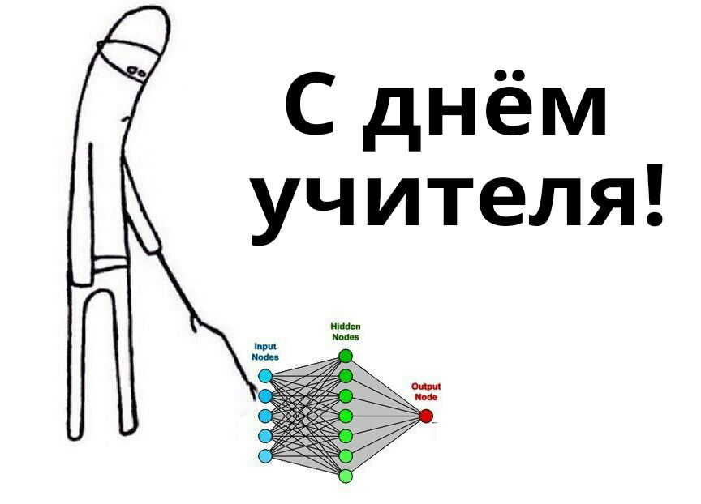

<!doctype html>
<html>
<head>
    <meta charset="utf-8">
    <meta name="viewport" content="width=device-width, initial-scale=1.0, maximum-scale=1.0, user-scalable=no">

    <title>Как работают GAN модели?</title>

    <link rel="stylesheet" href="css/reveal.css">
    <link rel="stylesheet" href="css/theme/sky.css">

    <!-- Theme used for syntax highlighting of code -->
    <link rel="stylesheet" href="lib/css/zenburn.css">

    <!-- Printing and PDF exports -->
    <script>
        var link = document.createElement('link');
        link.rel = 'stylesheet';
        link.type = 'text/css';
        link.href = window.location.search.match(/print-pdf/gi) ? 'css/print/pdf.css' : 'css/print/paper.css';
        document.getElementsByTagName('head')[0].appendChild(link);
    </script>
    <style>
        .reveal .footer {
            position: absolute;
            bottom: 1em;
            left: 1em;
            font-size: 0.5em;
            width: 103.2%;
        }
    </style>
</head>
<body>
<div class="reveal">
    <div class='footer'>
        
    </div>
    <div class="slides">

<!-------------------------------------------------------------------------------------------------->

        <section id="00" data-markdown="" data-background="img/00-background.png">
        </section>
        <!--<section id="01" data-markdown="">-->
            <!--<script type="text/template">-->
                <!--### Скромный слайд-->

                   <!-- - занимаюсь разработкой программного обеспечения N лет-->
                   <!-- - в-основном, бэкенд-->
                   <!-- - сталкивался с разными задачами, от оконных библиотек до бигдаты-->
                   <!-- - попутно изучил много языков программирования и инструментов-->
            <!--</script>-->
        <!--</section>-->
        <section id="02.1" data-markdown="" data-state="something">
            <script type="text/template">
                ### Основные элементы RL, 1
                - Агент (agent)
                - Среда (environment)
                - Стратегия (policy)
                - Функция ценности (value function)
                - Функция подкрепления (Q function)
                - Модель среды (model)
            </script>
        </section>
        <section id="02.2" data-markdown="" data-state="something">
            <script type="text/template">
                ### Основные элементы RL, 2

                
            </script>
        </section>

        <section id="03" data-markdown="">
            <script type="text/template">
                ### Сравнение с ГА

                <video height="400" data-autoplay src="img/03-dl-cars.mp4"/>
            </script>
        </section>

        <section id="20" data-markdown="" data-transition="none">
            <script type="text/template">
                ### Спасибо за внимание
                
            </script>
        </section>


<!-------------------------------------------------------------------------------------------------->

    </div>
</div>

<script src="lib/js/head.min.js"></script>
<script src="js/reveal.js"></script>

<script>
    // More info about config & dependencies:
    // - https://github.com/hakimel/reveal.js#configuration
    // - https://github.com/hakimel/reveal.js#dependencies
    Reveal.initialize({
        dependencies: [
            {src: 'plugin/markdown/marked.js'},
            {src: 'plugin/markdown/markdown.js'},
            {src: 'plugin/notes/notes.js', async: true},
            {
                src: 'plugin/highlight/highlight.js',
                async: true,
                callback: function () { hljs.initHighlightingOnLoad(); }
            }
        ]
    });
    
</script>
</body>
</html>
